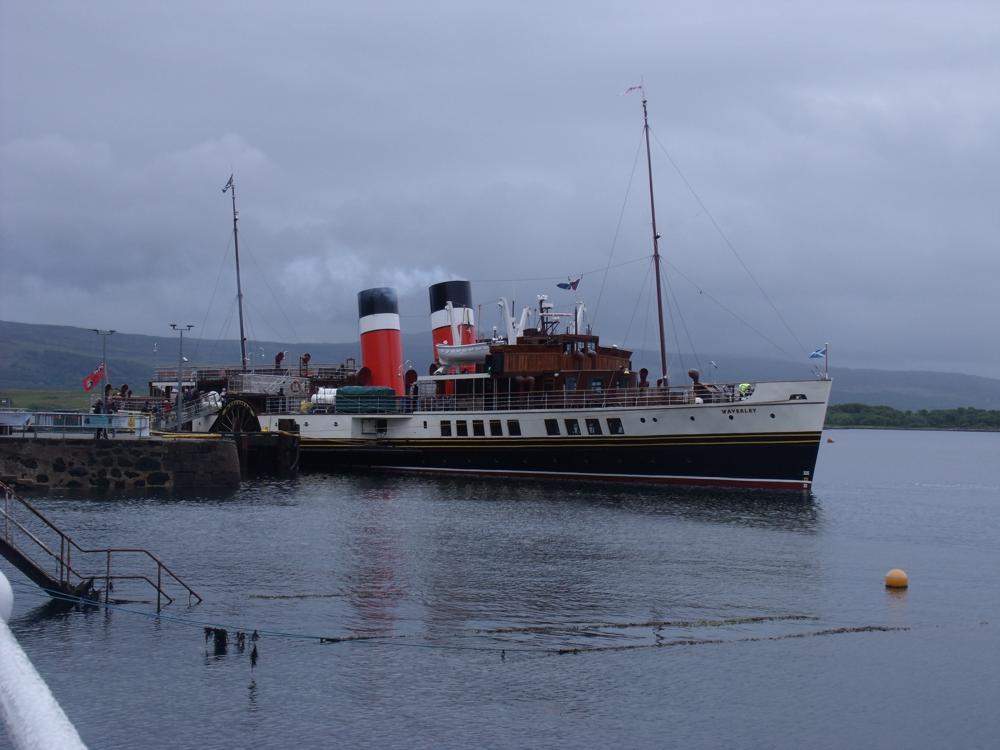
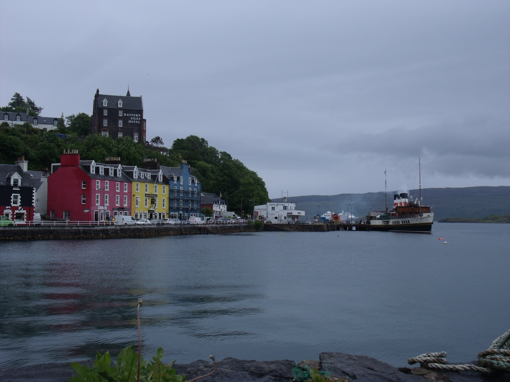
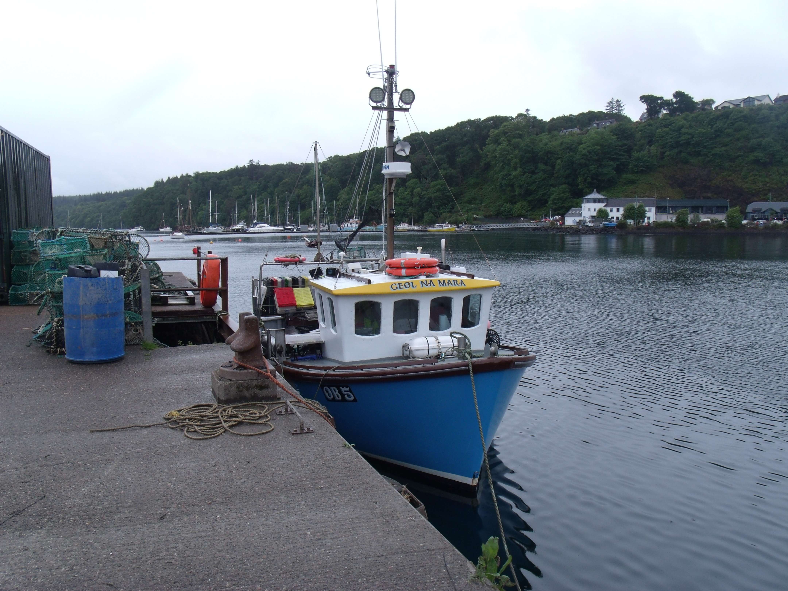
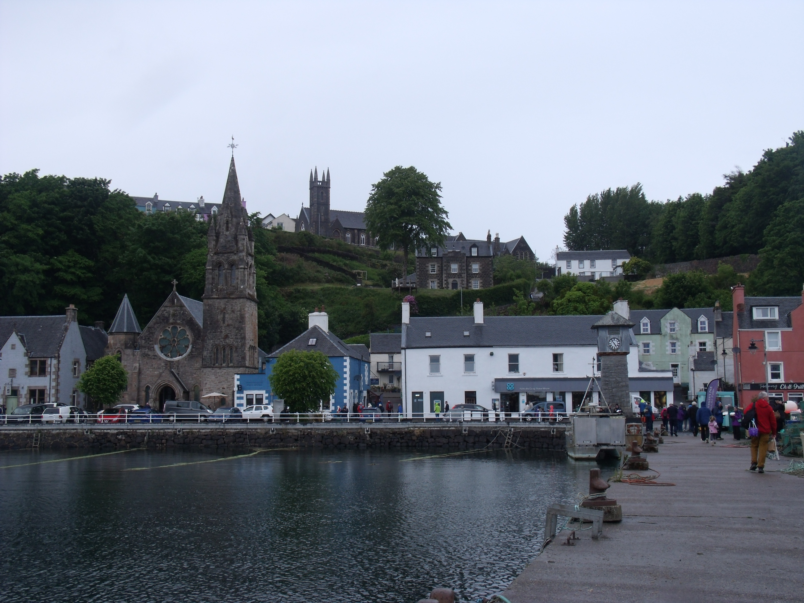
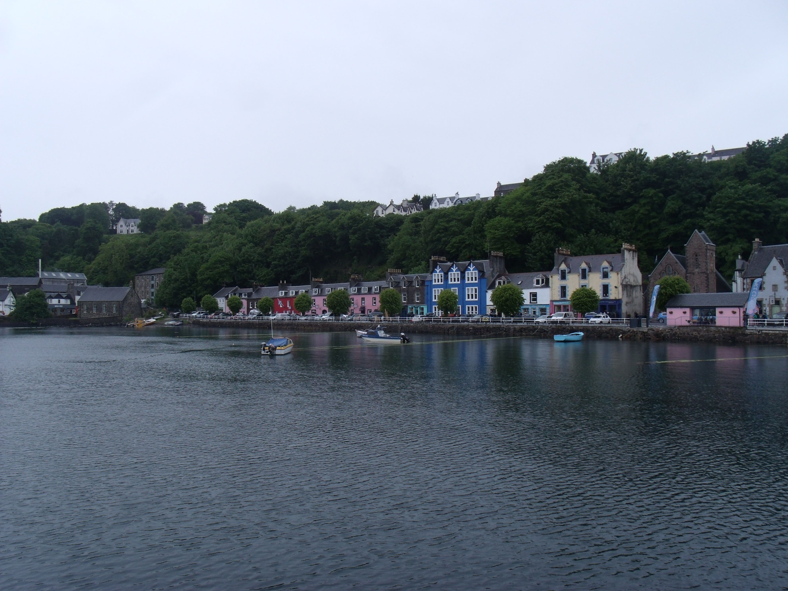
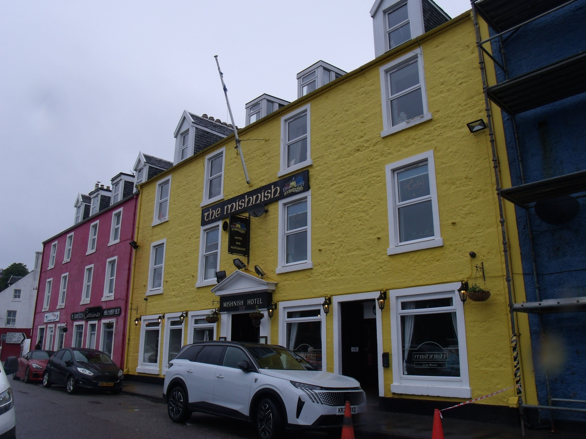

Date: 26-05-2026
Location: Tobermory, Isle of Mull
Camera: General Electric HZ15 Bridge Camera
Some photos I took from a day out on the PS Waverley, the world's last sea-going paddle steamer, back in May 2025.
The initial plan for this day out was to go out to the Isle of Tiree, however rough seas out past Mull meant that there was a change of plans.
So instead, the boat headed to Tobermory, where we got about an hour to walk around, which I of course used to get some good photos.
It was the first time I had visited Mull as an adult, and it was a lovely wee place to walk around. It was a really enjoyable wee day.





